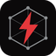
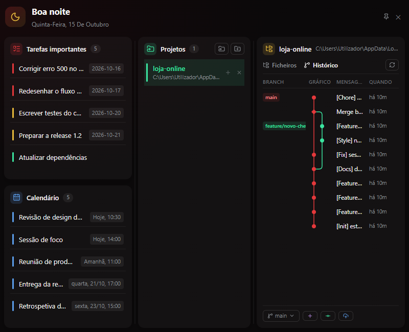
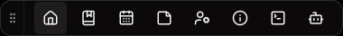
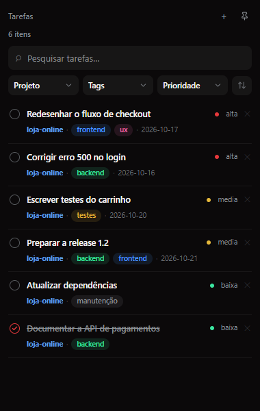
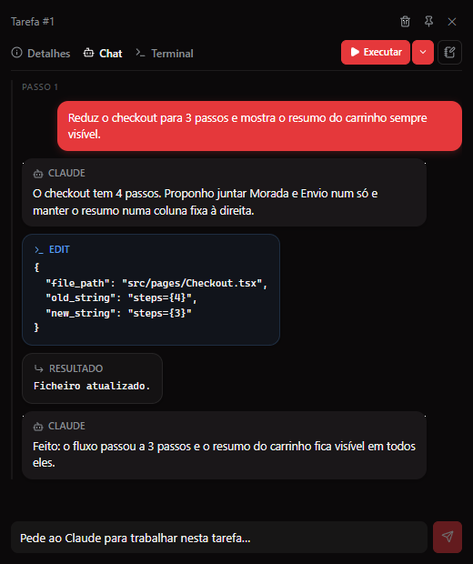
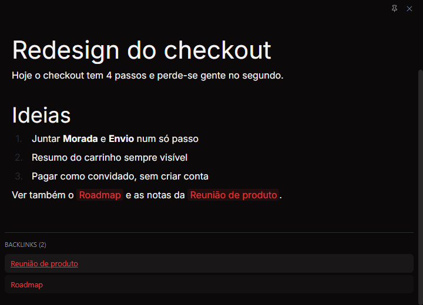
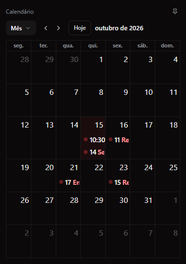

Git à vista
Histórico de commits em grafo, troca de branch e pull requests sem sair da workbar.

Andy Acesso antecipadoPara Windows · Feito com o Claude Agent SDK
O Andy é uma workbar flutuante que vive junto à barra de tarefas e junta tarefas, notas ligadas, calendário, terminal e um chat com o Claude em cada tarefa. Sem trocar de app, sem perder o foco.
Sem spam. Apenas acesso antecipado.


A workbar fica sempre por cima das outras janelas, encostada à barra de tarefas, na horizontal ou na vertical. Cada botão abre uma janela: Dashboard, Tarefas, Calendário, Notas, Definições, Info, Terminal e Agentes.
Tudo o que usas no dia a dia, numa barra discreta que só aparece quando a chamas.
Tarefas + Claude
Abre uma tarefa, planeia em markdown e conversa com o Claude sobre ela. Vês o que ele propõe e cada ferramenta que quer usar, e nada acontece sem a tua aprovação.


Notas
Escreve em markdown, liga ideias com [[wikilinks]] e vê os backlinks de cada nota, como no Obsidian, mas ao lado do teu trabalho.

Calendário
Eventos em vista de mês, semana, dia ou lista. O Dashboard mostra-te logo ao abrir o que está para acontecer hoje e amanhã.

Histórico de commits em grafo, troca de branch e pull requests sem sair da workbar.
Um terminal integrado, a um clique, para não teres de abrir outra janela.
Vê num só sítio os agentes e skills do Claude Code instalados, globais e do projeto.
Tarefas, eventos e notas ficam guardados no teu computador.
Aponta o Andy para qualquer pasta do teu computador, ou cria um projeto novo, com git se quiseres.
Fica encostada à barra de tarefas, na horizontal ou na vertical. O Dashboard mostra-te logo o que importa hoje.
Abre uma tarefa, planeia em markdown e pede ajuda ao Claude, sem sair do sítio onde estás.
A seguir: tags nas notas, pesquisa em todo o conteúdo e um grafo visual das ligações entre ideias.
Deixa o teu e-mail e avisamos-te assim que houver uma versão para instalar.
Sem spam. Apenas acesso antecipado.